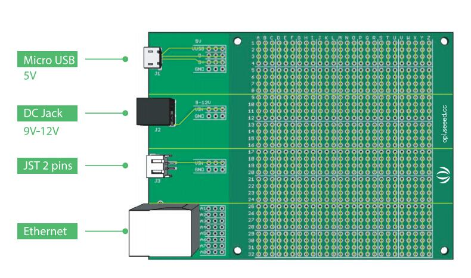

Hardware Development Kit for Arduino Uno
This Hardware Development Kit (HDK) for Arduino Uno is your easiest way to get started designing an Arduino Uno project.
This kit also includes commonly used components like Atmega328p, 16M crystal, resistor, switch, etc.
And the quantity is sufficient for at least 2 prototypes, which can get you out of the headache of purchasing small quantity components.
The parts are all in DIP which can be assembled by hand without difficulty.

Features
- Most commonly-used components
- Available for individual purchase
- Includes DIP Atmega328p with Arduino Uno Bootloader
- IC Pinout configuration diagram
- Modular circuits breakdown, e.g. UART, Power, Microcontroller.
Part List
- Commonly-used circuits instructions
- IC Pin configuration diagram
- $10 Fusion coupon ×1
- Protoboards ×2
- ATMEGA328P-PU ×2
- ATMEGA16U2-MU ×2
- Crystal 16MHz ×5
- USB connector ×3
- Ethernet RJ45 connector ×2
- JST 2.0 connector ×2
- DIP DC Power Jack ×2
- Colourful LED ×24
- PMIC Vin 30V Vout 3.3V ×3
- PMIC Vin 25V Vout 5V ×3
- DIP Resistor 1K ×20
- DIP Resistor 10K ×10
- DIP CAP Ceramic 22pF ×10
- DIP CAP Ceramic 100nF ×20
- DIP CAP Aluminum 47uF-16V ×6
- Male header(3p/14p/40p) ×13
- Female header ×12
- IC Socket ×3
- Button ×8
- Jumper Wires ×25
- Rivet ×10
Hardware Overview
Protoboard
You can use the protoboard to make a prototype.

ATMEGA328P Pinout
Reset Circuit

The reset button can bring the system to normal condition or an initial state.
Power Circuit
This circuit can put the 9V~12V voltage regulation to 5V.

This circuit can put the 9V~12V voltage regulation to 3.3V.
Oscillator Circuit
This parts must be connected to 328P for providing a stable clock signal.
USB to Serial
There should be an ATMEGA16U2 on this board.
References
Resistor Color Codes
The content of this chapter introduce how to calculate the value of color ring resistance.
Ceramic Capacitor Codes
The content of this chapter introduce how to calculate the value of ceramic capacitor.
Resources
Copyright (c) 2008-2016 Seeed Development Limited (
www.seeedstudio.com /
www.seeed.cc)
This static html page was created from http://www.seeedstudio.com/wiki